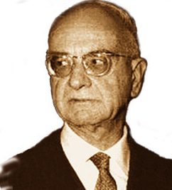

|  |
Costantino Mortati
|
(Corigliano Calabro 27.12.1891 - Roma 25.10.1985)
Le sue idee di Costituzionalista erano note nelle aule universitarie e non negli ambienti di partito.
A questo personaggio, così schivo e riservato, si devono molti caratteri attribuiti nella Costituzione agli istituti parlamentari.
|
La fondazione "Costantino Mortati" nasce nel 1998...
Costantino Mortati è considerato unanimemente uno dei più importanti costituzionalisti del nostro Novecento. Docente a Messina, Macerata, Napoli e Roma, partecipò ai lavori della Costituente e fu giudice costituzionale. Vero e proprio ‘classico’ del pensiero giuspubblicistico, il suo studio La Costituzione in senso materiale (1940) rappresenta ancora oggi un punto di riferimento obbligato, non solo per il cultore del diritto pubblico ma anche per il giurista tout court.
La vita
Nato a Corigliano Calabro (Cosenza) il 27 dicembre I891 in una famiglia di origine albanese, Mortati si laureò a Roma in giurisprudenza nel 1914 (con una tesi discussa con Francesco Filomusi-Guelfi), in filosofia nel 1917 (relatore Bernardino Varisco) e in scienze politiche nel 1930 (relatore Luigi Rossi). Funzionario della Corte dei conti dai primi anni Venti, libero docente e vincitore di concorso a cattedra nel 1936, insegnò a Messina, Macerata (dove fu anche rettore-preside della locale facoltà di Giurisprudenza), a Napoli dal 1942 (Istituto navale e facoltà di Economia) e a Roma dal 1955 (facoltà di Scienze politiche), fu membro della commissione per la riorganizzazione dello Stato (la cosiddetta commissione Forti) e dell’Assemblea costituente. Dal 1960 fu giudice della Corte costituzionale (su nomina del presidente della Repubblica Giovanni Gronchi) e nel 1962 ne divenne vicepresidente. Morì a Roma il 25 ottobre 1985. La giuspubblicistica italiana e Mortati La tradizione giuspubblicistica italiana costituisce il prodotto complesso dell’incontro-scontro tra due filoni principali, rappresentati, da un lato, dall’indirizzo storico-politico di origine franco-britannica, dall’altro, da quello giuspositivistico con radici tedesche (Mario Galizia, Maurizio Fioravanti, Emilio Costa). Chi tenda ad assolutizzare una sola di queste impostazioni non soltanto tradisce la realtà storica, ma impedisce anche la corretta comprensione di entrambi i suddetti indirizzi e dell’evoluzione complessiva della tradizione stessa. In questo specifico quadro, Mortati è stato lo studioso che ha cercato di fondere in modo originale, anche sulla base di una profonda conoscenza della letteratura internazionale e in particolare di quella tedesca, le due impostazioni del diritto pubblico italiano in una specifica teoria della costituzione nell’ambito della fase terminale del cosiddetto jus pubblicum europaeum, fondato sullo Stato nazionale (Il pensiero giuridico di Costantino Mortati, 1990; Fioravanti 2001; Lanchester 2004). L’opera di Mortati costituisce dunque la piena presa di coscienza della crisi del metodo di Vittorio Emanuele Orlando, con il riconoscimento dell’insufficienza di quella costruzione perfetta e mistica rappresentata dallo Stato puramente giuridico, che lo stesso Santi Romano aveva cercato di riarticolare in un apparente pluralismo istituzionale. L’indirizzo di Mortati costituì un superamento della stessa proposta social-darwinista di Alfredo Rocco, che apparentemente rappresentava una sintesi di aspetti parziali delle posizioni di Orlando e di Gaetano Mosca, e assicurava una formale continuità con la dottrina giuridica del liberalismo oligarchico. Con Mortati si prende piena consapevolezza della rivoluzione delle masse e della necessità di riconnettere politica e diritto, tentando di superare la grande scissione avvenuta dalla metà degli anni Ottanta del 19° sec. e proponendo esplicitamente di giuridicizzare il politico attraverso il riferimento ai principi e ai valori costituzionali, sostenuti dalla forza o dal gruppo di forze che si pongono alla base dell’ordinamento.
L’attività tra le due guerre
Già nella sua prima opera, L’ordinamento del governo (1931), frutto della tesi di laurea in scienze politiche discussa con Rossi e con Sergio Panunzio, Mortati affermò che avrebbe studiato le cosiddette zone grigie del diritto costituzionale, cioè quelle in cui il rapporto tra diritto e politica è più stretto. Si trattava di un palese riferimento alla metodologia antiformalista che aveva avuto inMosca, Angelo Majorana e Nicolò Ferracciù riferimenti costanti. Nel successivo La volontà e la causa nell’atto amministrativo e nella legge (1935), Mortati rilevò come all’origine di ogni assetto istituzionale e della stessa decisione politica vi sia il partito politico. Questa riflessione, che derivava dalla ricerca antiformalista di Mosca ma anche dagli studi successivi di Emilio Crosa sul principio politico, si collegava alla discussione sul metodo sviluppatasi in Germania nel periodo della Repubblica di Weimar, ma accoglieva anche l’istituzionalismo di Romano. Essa si sviluppò ulteriormente nella citata Costituzione in senso materiale, opera di ampio respiro che ancora oggi viene giudicata di capitale importanza nella storia della riflessione giuridica. Qui il rapporto tra costituzione formale e materiale appare dinamico, ed è correlato con l’azione delle forze politiche dominanti, all’interno di un gioco che può variare, ma entro limiti precisi, richiamando le categorie dell’elasticità e della rottura della Costituzione (Lanchester 2011). L’elemento base dell’ideologia giuridica di Orlando, ovvero la personalità dello Stato, in grado di appianare i contrasti tra monarca e assemblea parlamentare, viene dunque sostituito dalla Costituzione, sostenuta dal ceto politico dominante e dalla formula politica giustificativa dell’assetto costituzionale. Il tema qui affrontato da Mortati è dunque quello dei principi e dei valori desumibili da un determinato assetto storico-sociale, che assumono aspetti vincolanti per i soggetti istituzionali. La riflessione di Mortati, a fianco di quella di altri giovani giuspubblicisti (Giuseppe Chiarelli, Giuseppe Maranini, Carlo Esposito, Francesco Crisafulli, Massimo Severo Giannini, Egidio Tosato, ecc.), era stata stimolata in origine dalla posizione di Panunzio sulla funzione di indirizzo corporativo; essa appare importante per gli effetti che nel secondo dopoguerra avrebbe avuto sul dibattito costituente e sullo stesso sviluppo della dottrina italiana. Infatti, tutta la discussione contemporanea sui principi fondamentali della nostra Costituzione può essere – anche se in senso lato – fatta derivare dal dibattito metodologico e politico che tra la fine degli anni Trenta e i primi anni Quaranta coinvolse la parte più brillante e impegnata della scienza giuridica italiana. Mortati contribuì a tale dibattito con alcuni interventi importanti, in cui già si delineano molte sue posizioni successive. Tuttavia va rilevato come si sia trattato di un dibattito tutto interno al regime, e occorre chiarire come certi suoi termini possano essere stati riproposti nel periodo successivo. Per quanto riguarda Mortati, nei suoi scritti del periodo s’intravedono già elementi del personalismo di Emmanuel Mounier(mediato dagli ambienti romani della rivista dei gesuiti «La civiltà cattolica», di cui faceva parte suo cognato Giovanni Valentini), che tanta influenza avranno nel periodo della Costituente sulla posizione dei politici e giuristi cattolici, e in particolare del gruppo di Giuseppe Dossetti.
L’opera di preparazione della Costituzione
Coerentemente con le sue posizioni precedenti, Mortati definì il 25 luglio come «un colpo di Stato». Nel periodo dell’occupazione tedesca fu prossimo alle posizioni del movimento cattolico di sinistra Democrazia del lavoro, e solo le insistenze di Dossetti lo spinsero ad avvicinarsi alla Democrazia cristiana, al cui interno fu rapidamente investito di responsabilità primarie come tecnico delle istituzioni. Dal 1944, infatti, fece parte di tre importanti commissioni: quella centrale per lo studio dei problemi costituzionali (presieduta da Umberto Tupini), quella per l’elaborazione della legge elettorale politica e quella per lo studio della riorganizzazione dello Stato (la citata commissione Forti), nel cui ambito si occupò dei diritti pubblici subiettivi. Eletto deputato alla Costituente nella lista nazionale, entrò nella cosiddetta commissione dei 75, al cui interno partecipò ai lavori della seconda sottocommissione, stilando il testo della relazione sul potere legislativo. Che il suo contributo alla redazione della Costituzione sarebbe stato rilevante lo faceva presagire già la sua opera del 1945 La Costituente: la teoria, la storia, il problema italiano. Risulta ancor oggi attuale la sua analisi delle insufficienze dello Stato italiano, sorto da un’affrettata unificazione, con il suo ottuso e rapace accentramento, con l’angustia del suo parlamentarismo, che portava i partiti ad irretirsi nel giuoco delle clientele, con il suo distacco dalle masse (p. VII), Essa spiega anche alcune delle scelte allora operate dai membri della Costituente (De Siervo, in Il pensiero giuridico di Costantino Mortati, 1990). Influenzato fortemente dall’organicismo tedesco e dal pluralismo istituzionalistico francese e italiano (Maurice Hauriou eRomano), Mortati già alla commissione Forti sostenne «un sistema di diritti, riferiti non solo agli individui ma anche ai gruppi» (G. Amato, F. Bruno, La forma di governo italiana: dalle idee dei partiti alla Costituente, «Quaderni costituzionali», 1981, 1, p. 49), criticò l’inadeguatezza della rappresentanza politica tradizionale e propose che la rappresentanza regionale si collegasse con quella categoriale. In questo quadro, il sistema elettorale proporzionale apparve a Mortati una scelta obbligata in un contesto politicamente frammentato come quello italiano. Alla Costituente egli propose addirittura di costituzionalizzare il meccanismo di trasformazione dei voti in seggi, mentre negli ultimi anni della sua vita riesaminò le scelte operate intorno alla metà degli anni Quaranta, per motivi molto attuali legati alla necessità di un rafforzamento delle strutture decisionali, in un ordinamento politico ormai omogeneizzato e non più allo stadio formativo. Rifiutata la forma di governo presidenziale (soluzione che d’altro canto era stata proposta ufficialmente solo dal Partito d’azione), Mortati suggerì una forma intermedia tra quella parlamentare classica e quella direttoriale, ipotizzando un governo che – una volta ottenuta la fiducia – non potesse essere messo in crisi per almeno due anni. In caso di conflitto non risolto tra governo e Parlamento, il capo dello Stato avrebbe deciso se revocare il governo o sciogliere le Camere. Inoltre il capo dello Stato sarebbe stato eletto da un collegio elettorale speciale, formato dai rappresentanti degli interessi organizzati. Queste proposte di Mortati non furono accettate. Le logiche politiche che condussero all’approvazione della Costituzione erano incapaci di favorire quel «compromesso efficiente» che egli aveva auspicato già ai tempi della commissione Forti. Il risultato della Costituente non fu solo, come sostenne Piero Calamandrei, una rivoluzione futura in cambio di una stabilizzazione presente, ma una forma di governo caratterizzata dalla paura del tiranno. Istituzioni deboli e garantiste nell’ambito di una Costituzione pluralistica e avanzata negli obiettivi, si trovarono congelate dalla contrapposizione interna e internazionale del secondo dopoguerra.
L’attuazione della carta costituzionale
Gli anni successivi furono per Mortati quelli del rientro all’università e dell’immersione negli studi. Tuttavia egli mantenne alcuni collegamenti con il mondo politico. Per es., Fiorentino Sullo gli richiese più volte consulenze, in occasione delle quali egli si spese in un’opera pedagogica anche minuta, che denotava spirito di servizio e disponibilità militante. Furono, quelli, anni difficili per l’Italia e per chi come Mortati aveva riposto molte speranze nella Costituzione. L’applicazione del testo costituzionale venne infatti congelata dalla contrapposizione rigida tra destra e sinistra provocata dalla ’guerra fredda’ internazionale. Mortati, come altri giuristi cattolici (per es. Giorgio Balladore Pallieri), ebbe sempre chiaro che l’obiettivo era quello della piena applicazione del testo costituzionale nell’ambito di una sempre maggiore realizzazione dell’ideale democratico. Questa aspirazione appare evidente sia nel saggio di Mortati inserito nell’antologia commemorativa del primo decennale della Liberazione (Ispirazione democratica della Costituzione, in Il secondo Risorgimento: nel decennale della Resistenza e del ritorno alla democrazia, 1955, pp. 408-448, ora in Raccolta di scritti, 1972, 2° vol., pp. 281-328), sia nel suo volume La persona, lo Stato e le comunità intermedie (1959). Nel 1955 venne chiamato a Roma, alla facoltà di Scienze politiche, dove dal 1956 tenne – succedendo a Esposito – la cattedra di diritto costituzionale italiano e comparato, materia a suo tempo insegnata anche da Rossi. In quegli anni strinse un forte sodalizio con Esposito (pur così differente da lui nella metodologia) e svolse un’intensa attività, che portò tra l’altro alla fondazione della rivista «Giurisprudenza costituzionale», alla riedizione aggiornata, a partire dal 1952 (con il titolo Istituzioni di diritto pubblico), del suo Corso di diritto pubblico del 1949, e alla pubblicazione di numerose analisi costituzional-comparatiste (tra cui il Corso di lezioni di diritto costituzionale e comparato, con il testo delle lezioni da lui tenute a Scienze politiche, raccolte a partire dal 1958 dal suo assistente Sergio Fois). Nel 1960, infine, venne nominato giudice della Corte costituzionale dal presidente Gronchi, e rimase alla Consulta fino al 1972, divenendone anche vicepresidente. Anche alla Corte costituzionale Mortati applicò (v. Carusi, Pizzorusso, in Costantino Mortati costituzionalista calabrese, 1989, p. 235) il metodo giuridico-politico teorizzato nelle sue opere dottrinarie, e sottolineò costantemente l’importanza della giurisdizione costituzionale in un moderno Stato sociale di diritto, caratterizzato da pluralismo ideologico. In questo quadro si colloca la sua battaglia per l’evidenziazione dell’opinione dissenziente, sulla base dell’esempio statunitense, non considerando le peculiarità della situazione nazionale che spingono per la non evidenziazione dell’eventuale conflitto all’interno del collegio. Infaticabile lavoratore e studioso, anche durante il periodo in cui fu giudice della Corte Mortati continuò a produrre opere scientifiche, e continuò a impegnarsi per l’attuazione dei valori e dei principi della Costituzione. Di fronte alla mancata attuazione del dettato costituzionale e all’affossamento di molte speranze di rinnovamento, egli giunse a pensare che fosse necessaria un’azione di stimolo e di pungolo del corpo elettorale. Negli anni Sessanta fu così tra i fondatori del Movimento di opinione pubblica, che intendeva appunto stimolare la coscienza delle masse, ma che rimase un’organizzazione estremamente elitaria. La critica di Mortati allo ’Stato dei partiti’ non poteva avere, però, nessun elemento qualunquistico. Egli credeva infatti nell’indispensabilità delle formazioni politiche, pur considerando necessaria una decisa democratizzazione delle loro strutture. Mortati si convinse perciò della necessità di introdurre nell’ordinamento politico italiano riforme che favorissero la realizzazione concreta dei valori di redistribuzione e partecipazione. Tra le sue ultime opere, due spiccano come esempi di un’attività valutativamente orientata. La prima esamina la figura del difensore civico (L’ombudsman, 1974), una delle garanzie offerte al cittadino contro le prevaricazioni dell’amministrazione. La seconda, Commento all’art. 1 della Costituzione (1975), fu pubblicata due anni prima della grave malattia che lo costrinse a ritirarsi da ogni attività; tratta della forma di Stato nel nostro ordinamento, e conferma e approfondisce le sue precedenti scelte politiche e metodologiche per il perseguimento di una democrazia partecipata. È importante, anche al fine di individuare alcuni limiti della posizione di Mortati, ricordare che in questi anni egli riconsidera il ruolo del Parlamento nelle società industriali, proponendo un modello organicistico che ha come referente principale la Costituzione iugoslava, e richiamando il progetto per la formazione della seconda Camera da lui redatto alla Costituente.
FONTE: treccani.it